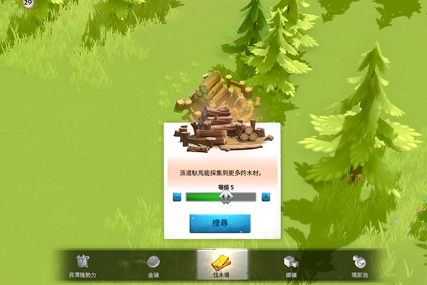
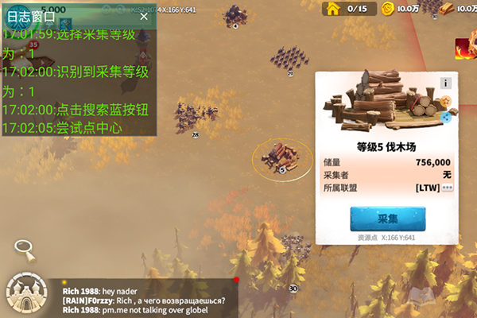
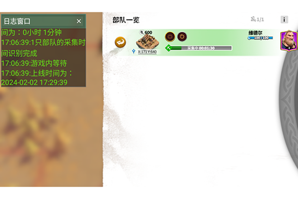
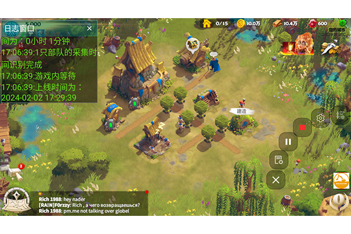

指定資源，自動採集
可以透過設定，來指定小助手要自動幫你採集哪些資源，有可以指定要採集的資源礦等級。

圖像辨識，安全穩定
挖掘小助手是透過圖像、文字辨識以及模擬點擊的方式，來幫助你的帳號進行採集。絕不動內存、不改動數據，避免觸犯法律相關責任。

自動計時，定時上線
當您的部隊抵達資源點開始採集後，小助手會自動記錄多久後採集完畢，並在時間到後重新上線、繼續採集。

懸浮工具、日誌窗口
在遊戲中也可透過點擊懸浮工具來開啟、暫停小助手，也能透過日誌窗口來查看小助手的一舉一動。